Unit 9
Coordination Compounds
Coordination Compounds

Objectives
After studying this Unit, you will be able to
• appreciate the postulates of Werner’s theory of coordination compounds;
• know the meaning of the terms: coordination entity, central atom/ion, ligand, coordination number, coordination sphere, coordination polyhedron, oxidation number, homoleptic and heteroleptic;
• learn the rules of nomenclature of coordination compounds;
• write the formulas and names of mononuclear coordination compounds;
• define different types of isomerism in coordination compounds;
• understand the nature of bonding in coordination compounds in terms of the Valence Bond and Crystal Field theories;
• learn the stability of coordination compounds;
• appreciate the importance and applications of coordination compounds in our day to day life.
Coordination Compounds are the backbone of modern inorganic and bio–inorganic chemistry and chemical industry.
In the previous Unit we learnt that the transition metals form a large number of complex compounds in which the metal atoms are bound to a number of anions or neutral molecules. In modern terminology such compounds are called coordination compounds. The chemistry of coordination compounds is an important and challenging area of modern inorganic chemistry. New concepts of chemical bonding and molecular structure have provided insights into the functioning of vital components of biological systems. Chlorophyll, haemoglobin and vitamin B12 are coordination compounds of magnesium, iron and cobalt respectively. Variety of metallurgical processes, industrial catalysts and analytical reagents involve the use of coordination compounds. Coordination compounds also find many applications in electroplating, textile dyeing and medicinal chemistry.
9.1 Werner's Theory of Coordination Compounds
Alfred Werner (1866-1919), a Swiss chemist was the first to formulate his ideas about the structures of coordination compounds. He prepared and characterised a large number of coordination compounds and studied their physical and chemical behaviour by simple experimental techniques. Werner proposed the concept of a primary valence and a secondary valence for a metal ion. Binary compounds such as CrCl3, CoCl2 or PdCl2 have primary valence of 3, 2 and 2 respectively. In a series of compounds of cobalt(III) chloride with ammonia, it was found that some of the chloride ions could be precipitated as AgCl on adding excess silver nitrate solution in cold but some remained in solution.
1 mol CoCl3.6NH3 (Yellow) gave 3 mol AgCl
1 mol CoCl3.5NH3 (Purple) gave 2 mol AgCl
1 mol CoCl3.4NH3 (Green) gave 1 mol AgCl
1 mol CoCl3.4NH3 (Violet) gave 1 mol AgCl
These observations, together with the results of conductivity measurements in solution can be explained if (i) six groups in all, either chloride ions or ammonia molecules or both, remain bonded to the cobalt ion during the reaction and (ii) the compounds are formulated as shown in Table 9.1, where the atoms within the square brackets form a single entity which does not dissociate under the reaction conditions. Werner proposed the term secondary valence for the number of groups bound directly to the metal ion; in each of these examples the secondary valences are six.
Table 9.1: Formulation of Cobalt(III) Chloride-Ammonia Complexes
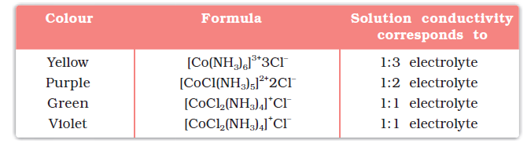
Note that the last two compounds in Table 9.1 have identical empirical formula, CoCl3.4NH3, but distinct properties. Such compounds are termed as isomers. Werner in 1898, propounded his theory of coordination compounds. The main postulates are:
1. In coordination compounds metals show two types of linkages (valences)-primary and secondary.
2. The primary valences are normally ionisable and are satisfied by negative ions.
3. The secondary valences are non ionisable. These are satisfied by neutral molecules or negative ions. The secondary valence is equal to the coordination number and is fixed for a metal.
4. The ions/groups bound by the secondary linkages to the metal have characteristic spatial arrangements corresponding to different coordination numbers.
In modern formulations, such spatial arrangements are called coordination polyhedra. The species within the square bracket are coordination entities or complexes and the ions outside the square bracket are called counter ions.
He further postulated that octahedral, tetrahedral and square planar geometrical shapes are more common in coordination compounds of transition metals. Thus, [Co(NH3)6]3+, [CoCl(NH3)5]2+ and [CoCl2(NH3)4]+ are octahedral entities, while [Ni(CO)4] and [PtCl4]2– are tetrahedral and square planar, respectively.
Example 9.1
On the basis of the following observations made with aqueous solutions, assign secondary valences to metals in the following compounds:
Solution
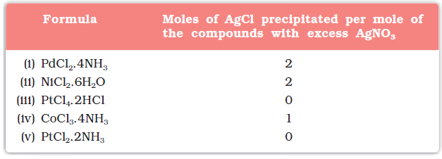
Solution
(i) Secondary 4 (ii) Secondary 6
(iii) Secondary 6 (iv) Secondary 6 (v) Secondary 4
Difference between a double salt and a complex
Both double salts as well as complexes are formed by the combination of two or more stable compounds in stoichiometric ratio. However, they differ in the fact that double salts such as carnallite, KCl.MgCl2.6H2O, Mohr’s salt, FeSO4.(NH4)2SO4.6H2O, potash alum, KAl(SO4)2.12H2O, etc. dissociate into simple ions completely when dissolved in water. However, complex ions such as [Fe(CN)6]4– of K4Fe(CN)6, do not dissociate into Fe2+ and CN– ions.
Werner was born on December 12, 1866, in Mülhouse, a small community in the French province of Alsace. His study of chemistry began in Karlsruhe (Germany) and continued in Zurich (Switzerland), where in his doctoral thesis in 1890, he explained the difference in properties of certain nitrogen containing organic substances on the basis of isomerism. He extended vant Hoff's theory of tetrahedral carbon atom and modified it for nitrogen. Werner showed optical and electrical differences between complex compounds based on physical measurements. In fact, Werner was the first to discover optical activity in certain coordination compounds.
He, at the age of 29 years became a full professor at Technische Hochschule in Zurich in 1895. Alfred Werner was a chemist and educationist. His accomplishments included the development of the theory of coordination compounds. This theory, in which Werner proposed revolutionary ideas about how atoms and molecules are linked together, was formulated in a span of only three years, from 1890 to 1893. The remainder of his career was spent gathering the experimental support required to validate his new ideas. Werner became the first Swiss chemist to win the Nobel Prize in 1913 for his work on the linkage of atoms and the coordination theory.
9.2 Definitions of Some Important Terms Pertaining to Coordination Compounds
(a) Coordination entity
A coordination entity constitutes a central metal atom or ion bonded to a fixed number of ions or molecules. For example, [CoCl3(NH3)3] is a coordination entity in which the cobalt ion is surrounded by three ammonia molecules and three chloride ions. Other examples are [Ni(CO)4], [PtCl2(NH3)2], [Fe(CN)6]4–, [Co(NH3)6]3+.
(b) Central atom/ion
In a coordination entity, the atom/ion to which a fixed number of ions/groups are bound in a definite geometrical arrangement around it, is called the central atom or ion. For example, the central atom/ion in the coordination entities: [NiCl2(H2O)4], [CoCl(NH3)5]2+ and [Fe(CN)6]3– are Ni2+, Co3+ and Fe3+, respectively. These central atoms/ions are also referred to as Lewis acids.
(c) Ligands
The ions or molecules bound to the central atom/ion in the coordination entity are called ligands. These may be simple ions such as Cl–, small molecules such as H2O or NH3, larger molecules such as H2NCH2CH2NH2 or N(CH2CH2NH2)3 or even macromolecules, such as proteins.
When a ligand is bound to a metal ion through a single donor atom, as with Cl–, H2O or NH3, the ligand is said to be unidentate. When a ligand can bind through two donor atoms as in H2NCH2CH2NH2 (ethane-1,2-diamine) or C2O42– (oxalate), the ligand is said to be didentate and when several donor atoms are present in a single ligand as in N(CH2CH2NH2)3, the ligand is said to be polydentate. Ethylenediaminetetraacetate ion (EDTA4–) is an important hexadentate ligand. It can bind through two nitrogen and four oxygen atoms to a central metal ion.
When a di- or polydentate ligand uses its two or more donor atoms to bind a single metal ion, it is said to be a chelate ligand. The number of such ligating groups is called the denticity of the ligand. Such complexes, called chelate complexes tend to be more stable than similar complexes containing unidentate ligands (for reasons see Section 9.8). Ligand which can ligate through two different atoms is called ambidentate ligand. Examples of such ligands are the NO2– and SCN– ions. NO2– ion can coordinate either through nitrogen or through oxygen to a central metal atom/ion. Similarly, SCN– ion can coordinate through the sulphur or nitrogen atom.
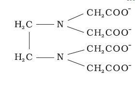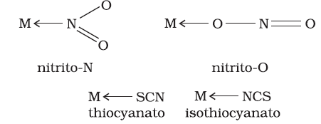
(d) Coordination number
The coordination number (CN) of a metal ion in a complex can be defined as the number of ligand donor atoms to which the metal is directly bonded. For example, in the complex ions, [PtCl6]2– and [Ni(NH3)4]2+, the coordination number of Pt and Ni are 6 and 4 respectively. Similarly, in the complex ions, [Fe(C2O4)3]3– and [Co(en)3]3+, the coordination number of both, Fe and Co, is 6 because C2O42– and en (ethane-1,2-diamine) are didentate ligands.
It is important to note here that coordination number of the central atom/ion is determined only by the number of sigma bonds formed by the ligand with the central atom/ion. Pi bonds, if formed between the ligand and the central atom/ion, are not counted for this purpose.
(e) Coordination sphere
The central atom/ion and the ligands attached to it are enclosed in square bracket and is collectively termed as the coordination sphere. The ionisable groups are written outside the bracket and are called counter ions. For example, in the complex K4[Fe(CN)6], the coordination sphere is [Fe(CN)6]4– and the counter ion is K+.
(f) Coordination polyhedron
The spatial arrangement of the ligand atoms which are directly attached to the central atom/ion defines a coordination polyhedron about the central atom. The most common coordination polyhedra are octahedral, square planar and tetrahedral. For example, [Co(NH3)6]3+ is octahedral, [Ni(CO)4] is tetrahedral and [PtCl4]2– is square planar. Fig. 9.1 shows the shapes of different coordination polyhedra.
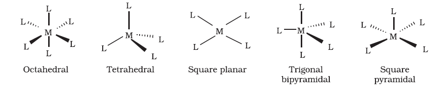
Fig. 9.1: Shapes of different coordination polyhedra. M represents the central atom/ion and L, a unidentate ligand.
(g) Oxidation number of central atom
The oxidation number of the central atom in a complex is defined as the charge it would carry if all the ligands are removed along with the electron pairs that are shared with the central atom. The oxidation number is represented by a Roman numeral in parenthesis following the name of the coordination entity. For example, oxidation number of copper in [Cu(CN)4]3– is +1 and it is written as Cu(I).
(h) Homoleptic and heteroleptic complexes
Complexes in which a metal is bound to only one kind of donor groups, e.g., [Co(NH3)6]3+, are known as homoleptic. Complexes in which a metal is bound to more than one kind of donor groups, e.g., [Co(NH3)4Cl2]+, are known as heteroleptic.
9.3 Nomenclature of Coordination Compounds
Nomenclature is important in Coordination Chemistry because of the need to have an unambiguous method of describing formulas and writing systematic names, particularly when dealing with isomers. The formulas and names adopted for coordination entities are based on the recommendations of the International Union of Pure and Applied Chemistry (IUPAC).
9.3.1 Formulas of Mononuclear Coordination Entities
The formula of a compound is a shorthand tool used to provide basic information about the constitution of the compound in a concise and convenient manner. Mononuclear coordination entities contain a single central metal atom. The following rules are applied while writing the formulas:
(i) The central atom is listed first.
(ii) The ligands are then listed in alphabetical order. The placement of a ligand in the list does not depend on its charge.
(iii) Polydentate ligands are also listed alphabetically. In case of abbreviated ligand, the first letter of the abbreviation is used to determine the position of the ligand in the alphabetical order.
(iv) The formula for the entire coordination entity, whether charged or not, is enclosed in square brackets. When ligands are polyatomic, their formulas are enclosed in parentheses. Ligand abbreviations are also enclosed in parentheses.
(v) There should be no space between the ligands and the metal within a coordination sphere.
(vi) When the formula of a charged coordination entity is to be written without that of the counter ion, the charge is indicated outside the square brackets as a right superscript with the number before the sign. For example, [Co(CN)6]3–, [Cr(H2O)6]3+, etc.
(vii) The charge of the cation(s) is balanced by the charge of the anion(s).
Note: The 2004 IUPAC draft recommends that ligands will be sorted alphabetically, irrespective of charge.
9.3.2 Naming of Mononuclear Coordination Compounds
The names of coordination compounds are derived by following the principles of additive nomenclature. Thus, the groups that surround the central atom must be identified in the name. They are listed as prefixes to the name of the central atom along with any appropriate multipliers. The following rules are used when naming coordination compounds:
(i) The cation is named first in both positively and negatively charged coordination entities.
(ii) The ligands are named in an alphabetical order before the name of the central atom/ion. (This procedure is reversed from writing formula).
(iii) Names of the anionic ligands end in –o, those of neutral and cationic ligands are the same except aqua for H2O, ammine for NH3, carbonyl for CO and nitrosyl for NO. These are placed within enclosing marks ( ).
(iv) Prefixes mono, di, tri, etc., are used to indicate the number of the individual ligands in the coordination entity. When the names of the ligands include a numerical prefix, then the terms, bis, tris, tetrakis are used, the ligand to which they refer being placed in parentheses. For example, [NiCl2(PPh3)2] is named as dichlorobis(triphenylphosphine)nickel(II).
(v) Oxidation state of the metal in cation, anion or neutral coordination entity is indicated by Roman numeral in parenthesis.
(vi) If the complex ion is a cation, the metal is named same as the element. For example, Co in a complex cation is called cobalt and Pt is called platinum. If the complex ion is an anion, the name of the metal ends with the suffix – ate. For example, Co in a complex anion, 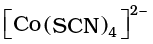is called cobaltate. For some metals, the Latin names are
used in the complex anions, e.g., ferrate for Fe.
(vii) The neutral complex molecule is named similar to that of the complex cation.
The following examples illustrate the nomenclature for coordination compounds.
Note: The 2004 IUPAC draft recommends that anionic ligands will end with–ido so that chloro would become chlorido, etc.
1. [Cr(NH3)3(H2O)3]Cl3 is named as:
triamminetriaquachromium(III) chloride
Explanation: The complex ion is inside the square bracket, which is a cation. The amine ligands are named before the aqua ligands according to alphabetical order. Since there are three chloride ions in the compound, the charge on the complex ion must be +3 (since the compound is electrically neutral). From the charge on the complex ion and the charge on the ligands, we can calculate the oxidation number of the metal. In this example, all the ligands are neutral molecules. Therefore, the oxidation number of chromium must be the same as the charge of the complex ion, +3.
2. [Co(H2NCH2CH2NH2)3]2(SO4)3 is named as:
tris(ethane-1,2–diammine)cobalt(III) sulphate
Explanation: The sulphate is the counter anion in this molecule. Since it takes 3 sulphates to bond with two complex cations, the charge on each complex cation must be +3. Further, ethane-1,2–diamine is a neutral molecule, so the oxidation number of cobalt in the complex ion must be +3. Remember that you never have to indicate the number of cations and anions in the name of an ionic compound.
3. [Ag(NH3)2][Ag(CN)2] is named as:
diamminesilver(I) dicyanoargentate(I)
Example 9.2
Write the formulas for the following coordination compounds:
(a) Tetraammineaquachloridocobalt(III) chloride
(b) Potassium tetrahydroxidozincate(II)
(c) Potassium trioxalatoaluminate(III)
(d) Dichloridobis(ethane-1,2-diamine)cobalt(III)
(e) Tetracarbonylnickel(0)
Solution
(a) [Co(NH3)4(H2O)Cl]Cl2 (b) K2[Zn(OH)4] (c) K3[Al(C2O4)3]
(d) [CoCl2(en)2]+ (e) [Ni(CO)4]
Example 9.3
Write the IUPAC names of the following coordination compounds:
(a) [Pt(NH3)2Cl(NO2)] (b) K3[Cr(C2O4)3] (c) [CoCl2(en)2]Cl
(d) [Co(NH3)5(CO3)]Cl (e) Hg[Co(SCN)4]
Solution
(a) Diamminechloridonitrito-N-platinum(II)
(b) Potassium trioxalatochromate(III)
(c) Dichloridobis(ethane-1,2-diamine)cobalt(III) chloride
(d) Pentaamminecarbonatocobalt(III) chloride
(e) Mercury tetrathiocyanatocobaltate(III)
Notice how the name of the metal differs in cation and anion even though they contain the same metal ions
Intext Questions
9.1 Write the formulas for the following coordination compounds:
(i) Tetraamminediaquacobalt(III) chloride
(ii) Potassium tetracyanidonickelate(II)
(iii) Tris(ethane–1,2–diamine) chromium(III) chloride
(iv) Amminebromidochloridonitrito-N-platinate(II)
(v) Dichloridobis(ethane–1,2–diamine)platinum(IV) nitrate
(vi) Iron(III) hexacyanidoferrate(II)
9.2 Write the IUPAC names of the following coordination compounds:
(i) [Co(NH3)6]Cl3 (ii) [Co(NH3)5Cl]Cl2 (iii) K3[Fe(CN)6]
(iv) K3[Fe(C2O4)3] (v) K2[PdCl4] (vi) [Pt(NH3)2Cl(NH2CH3)]Cl
9.4 Isomerism in Coordination Compounds
Isomers are two or more compounds that have the same chemical formula but a different arrangement of atoms. Because of the different arrangement of atoms, they differ in one or more physical or chemical properties. Two principal types of isomerism are known among coordination compounds. Each of which can be further subdivided.
(a) Stereoisomerism
(i) Geometrical isomerism (ii) Optical isomerism
(b) Structural isomerism
(i) Linkage isomerism (ii) Coordination isomerism
(iii) Ionisation isomerism (iv) Solvate isomerism
Stereoisomers have the same chemical formula and chemical bonds but they have different spatial arrangement. Structural isomers have different bonds. A detailed account of these isomers are given below.
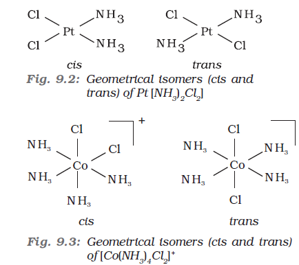
This type of isomerism arises in heteroleptic complexes due to different possible geometric arrangements of the ligands. Important examples of this behaviour are found with coordination numbers 4 and 6. In a square planar complex of formula [MX2L2] (X and L are unidentate), the two ligands X may be arranged adjacent to each other in a cis isomer, or opposite to each other in a trans isomer as depicted in Fig. 9.2.
Other square planar complex of the type MABXL (where A, B, X, L are unidentates) shows three isomers-two cis and one trans. You may attempt to draw these structures. Such isomerism is not possible for a tetrahedral geometry but similar behaviour is possible in octahedral complexes of formula [MX2L4] in which the two ligands X may be oriented cis or trans to each other (Fig. 9.3).
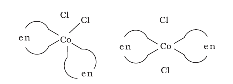
Fig. 9.4: Geometrical isomers (cis and trans) of [CoCl2(en)2]
This type of isomerism also arises when didentate ligands L–L [e.g., NH2 CH2 CH2 NH2 (en)] are present in complexes of formula [MX2(L–L)2] (Fig. 9.4).
Another type of geometrical isomerism occurs in octahedral coordination entities of the type [Ma3b3] like [Co(NH3)3(NO2)3]. If three donor atoms of the same ligands occupy adjacent positions at the corners of an octahedral face, we have the facial (fac) isomer. When the positions are around the meridian of the octahedron, we get the meridional (mer) isomer (Fig. 9.5).
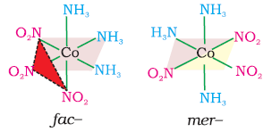
Fig. 9.5 The facial (fac) and meridional (mer) isomers of [Co(NH3)3(NO2)3]
Example 9.4
Why is geometrical isomerism not possible in tetrahedral complexes having two different types of unidentate ligands coordinated with the central metal ion ?
Solution
Tetrahedral complexes do not show geometrical isomerism because the relative positions of the unidentate ligands attached to the central metal atom are the same with respect to each other.
9.4.2 Optical Isomerism
Optical isomers are mirror images that cannot be superimposed on one another. These are called as enantiomers. The molecules or ions that cannot be superimposed are called chiral. The two forms are called dextro (d) and laevo (l) depending upon the direction they rotate the plane of polarised light in a polarimeter (d rotates to the right, l to the left). Optical isomerism is common in octahedral complexes involving didentate ligands (Fig. 9.6).
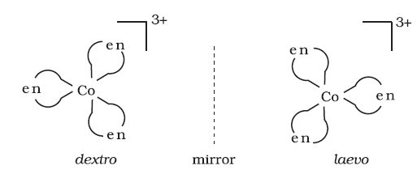
Fig.9.6: Optical isomers (d and l) of [Co(en)3] 3+
In a coordination entity of the type [PtCl2(en)2]2+, only the cis-isomer shows optical activity (Fig. 9.7).
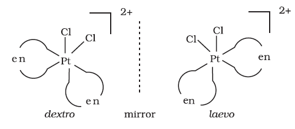
Fig.9.7 Optical isomers (d and l) of cis- [PtCl2(en)2]2+
Example 9.5
Draw structures of geometrical isomers of [Fe(NH3)2(CN)4]–
Solution
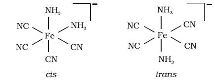
Example 9.6
Out of the following two coordination entities which is chiral (optically active)?
(a) cis-[CrCl2(ox)2]3– (b) trans-[CrCl2(ox)2]3–
Solution
The two entities are represented as
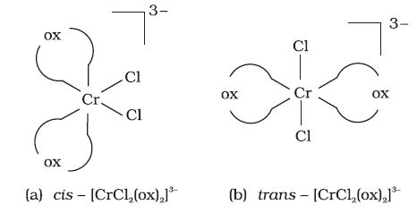
Out of the two, (a) cis - [CrCl2(ox)2]3- is chiral (optically active).
9.4.3 Linkage Isomerism
Linkage isomerism arises in a coordination compound containing ambidentate ligand. A simple example is provided by complexes containing the thiocyanate ligand, NCS–, which may bind through the nitrogen to give M–NCS or through sulphur to give M–SCN. Jørgensen discovered such behaviour in the complex [Co(NH3)5(NO2)]Cl2, which is obtained as the red form, in which the nitrite ligand is bound through oxygen (–ONO), and as the yellow form, in which the nitrite ligand is bound through nitrogen (–NO2).
9.4.4 Coordination Isomerism
This type of isomerism arises from the interchange of ligands between cationic and anionic entities of different metal ions present in a complex. An example is provided by [Co(NH3)6][Cr(CN)6], in which the NH3 ligands are bound to Co3+ and the CN– ligands to Cr3+. In its coordination isomer [Cr(NH3)6][Co(CN)6], the NH3 ligands are bound to Cr3+ and the CN– ligands to Co3+.
9.4.5 Ionisation Isomerism
This form of isomerism arises when the counter ion in a complex salt is itself a potential ligand and can displace a ligand which can then become the counter ion. An example is provided by the ionisation isomers [Co(NH3)5SO4]Br and [Co(NH3)5Br]SO4.
9.4.6 Solvate Isomerism
This form of isomerism is known as ‘hydrate isomerism’ in case where water is involved as a solvent. This is similar to ionisation isomerism. Solvate isomers differ by whether or not a solvent molecule is directly bonded to the metal ion or merely present as free solvent molecules in the crystal lattice. An example is provided by the aqua complex [Cr(H2O)6]Cl3 (violet) and its solvate isomer [Cr(H2O)5Cl]Cl2.H2O (grey-green).
Intext Questions
9.3 Indicate the types of isomerism exhibited by the following complexes and draw the structures for these isomers:
(i) K[Cr(H2O)2(C2O4)2 (ii) [Co(en)3]Cl3
(iii) [Co(NH3)5(NO2)](NO3)2 (iv) [Pt(NH3)(H2O)Cl2]
9.4 Give evidence that [Co(NH3)5Cl]SO4 and [Co(NH3)5SO4]Cl are ionisation isomers.
9.5 Bonding in Coordination Compounds
Werner was the first to describe the bonding features in coordination compounds. But his theory could not answer basic questions like:
(i) Why only certain elements possess the remarkable property of forming coordination compounds?
(ii) Why the bonds in coordination compounds have directional properties?
(iii) Why coordination compounds have characteristic magnetic and optical properties?
Many approaches have been put forth to explain the nature of bonding in coordination compounds viz. Valence Bond Theory (VBT), Crystal Field Theory (CFT), Ligand Field Theory (LFT) and Molecular Orbital Theory (MOT). We shall focus our attention on elementary treatment of the application of VBT and CFT to coordination compounds.
9.5.1 Valence Bond Theory
According to this theory, the metal atom or ion under the influence of ligands can use its (n-1)d, ns, np or ns, np, nd orbitals for hybridisation to yield a set of equivalent orbitals of definite geometry such as octahedral, tetrahedral, square planar and so on (Table 9.2). These hybridised orbitals are allowed to overlap with ligand orbitals that can donate electron pairs for bonding. This is illustrated by the following examples.
Table 9.2: Number of Orbitals and Types of Hybridisations
|
Coordination
number |
Type of
hybridisation |
Distribution of hybrid
orbitals in space |
|
4
|
sp3
|
Tetrahedral
|
|
4
|
dsp2
|
Square planar
|
|
5
|
sp3d
|
Trigonal bipyramidal
|
|
6
|
sp3d2
|
Octahedral
|
|
6
|
d2sp3
|
Octahedral
|
It is usually possible to predict the geometry of a complex from the knowledge of its magnetic behaviour on the basis of the valence bond theory.
In the diamagnetic octahedral complex, [Co(NH3)6]3+, the cobalt ion is in +3 oxidation state and has the electronic configuration 3d6. The hybridisation scheme is as shown in diagram.
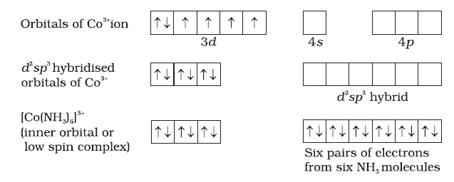
Six pairs of electrons, one from each NH3 molecule, occupy the six hybrid orbitals. Thus, the complex has octahedral geometry and is diamagnetic because of the absence of unpaired electron. In the formation of this complex, since the inner d orbital (3d) is used in hybridisation, the complex, [Co(NH3)6]3+ is called an inner orbital or low spin or spin paired complex. The paramagnetic octahedral complex, [CoF6]3– uses outer orbital (4d ) in hybridisation (sp3d2). It is thus called outer orbital or high spin or spin free complex. Thus:

In tetrahedral complexes one s and three p orbitals are hybridised to form four equivalent orbitals oriented tetrahedrally. This is ill-ustrated below for [NiCL4]2-. Here nickel is in +2 oxidation state and the ion has the electronic configuration 3d8. The hybridisation scheme is as shown in diagram.
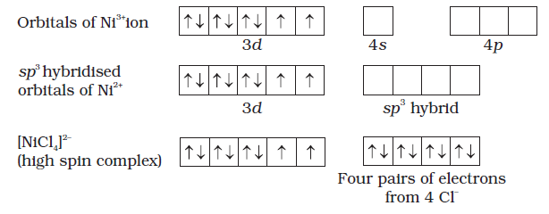
Each Cl– ion donates a pair of electrons. The compound is paramagnetic since it contains two unpaired electrons. Similarly, [Ni(CO)4] has tetrahedral geometry but is diamagnetic since nickel is in zero oxidation state and contains no unpaired electron.
In the square planar complexes, the hybridisation involved is dsp2. An example is [Ni(CN)4]2–. Here nickel is in +2 oxidation state and has the electronic configuration 3d8. The hybridisation scheme is as shown in diagram:
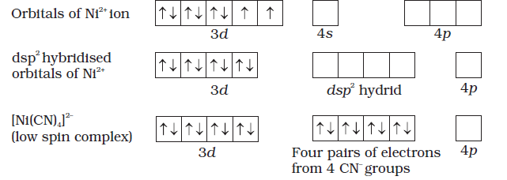
Each of the hybridised orbitals receives a pair of electrons from a cyanide ion. The compound is diamagnetic as evident from the absence of unpaired electron.
It is important to note that the hybrid orbitals do not actually exist. In fact, hybridisation is a mathematical manipulation of wave equation for the atomic orbitals involved.
9.5.2 Magnetic Properties of Coordination Compounds
The magnetic moment of coordination compounds can be measured by the magnetic susceptibility experiments. The results can be used to obtain information about the structures adopted by metal complexes.
A critical study of the magnetic data of coordination compounds of metals of the first transition series reveals some complications. For metal ions with upto three electrons in the d orbitals, like Ti3+ (d1); V3+ (d2); Cr3+ (d3); two vacant d orbitals are available for octahedral hybridisation with 4s and 4p orbitals. The magnetic behaviour of these free ions and their coordination entities is similar. When more than three 3d electrons are present, the required pair of 3d orbitals for octahedral hybridisation is not directly available (as a consequence of Hund’s rule). Thus, for d4 (Cr2+, Mn3+), d5 (Mn2+, Fe3+), d6 (Fe2+, Co3+) cases, a vacant pair of d orbitals results only by pairing of 3d electrons which leaves two, one and zero unpaired electrons, respectively.
The magnetic data agree with maximum spin pairing in many cases, especially with coordination compounds containing d6 ions. However, with species containing d4 and d5 ions there are complications. [Mn(CN)6]3– has magnetic moment of two unpaired electrons while [MnCl6]3– has a paramagnetic moment of four unpaired electrons. [Fe(CN)6]3– has magnetic moment of a single unpaired electron while [FeF6]3– has a paramagnetic moment of five unpaired electrons. [CoF6]3– is paramagnetic with four unpaired electrons while [Co(C2O4)3]3– is diamagnetic. This apparent anomaly is explained by valence bond theory in terms of formation of inner orbital and outer orbital coordination entities. [Mn(CN)6]3–, [Fe(CN)6]3– and [Co(C2O4)3]3– are inner orbital complexes involving d2sp3 hybridisation, the former two complexes are paramagnetic and the latter diamagnetic. On the other hand, [MnCl6]3–, [FeF6]3– and [CoF6-]3– are outer orbital complexes involving sp3d2 hybridisation and are paramagnetic corresponding to four, five and four unpaired electrons.
Example 9.7
The spin only magnetic moment of [MnBr4]2– is 5.9 BM. Predict the geometry of the complex ion ?
Solution
Since the coordination number of Mn2+ ion in the complex ion is 4, it will be either tetrahedral (sp3 hybridisation) or square planar (dsp2 hybridisation). But the fact that the magnetic moment of the complex ion is 5.9 BM, it should be tetrahedral in shape rather than square planar because of the presence of five unpaired electrons in the d orbitals.
9.5.3 Limitations of Valence Bond Theory
While the VB theory, to a larger extent, explains the formation, structures and magnetic behaviour of coordination compounds, it suffers from the following shortcomings:
(i) It involves a number of assumptions.
(ii) It does not give quantitative interpretation of magnetic data.
(iii) It does not explain the colour exhibited by coordination compounds.
(iv) It does not give a quantitative interpretation of the thermodynamic or kinetic stabilities of coordination compounds.
(v) It does not make exact predictions regarding the tetrahedral and square planar structures of 4-coordinate complexes.
(vi) It does not distinguish between weak and strong ligands.
9.5.4 Crystal Field Theory
The crystal field theory (CFT) is an electrostatic model which considers the metal-ligand bond to be ionic arising purely from electrostatic interactions between the metal ion and the ligand. Ligands are treated as point charges in case of anions or dipoles in case of neutral molecules. The five d orbitals in an isolated gaseous metal atom/ion have same energy, i.e., they are degenerate. This degeneracy is maintained if a spherically symmetrical field of negative charges surrounds the metal atom/ion. However, when this negative field is due to ligands (either anions or the negative ends of dipolar molecules like NH3 and H2O) in a complex, it becomes asymmetrical and the degeneracy of the d orbitals is lifted. It results in splitting of the d orbitals. The pattern of splitting depends upon the nature of the crystal field. Let us explain this splitting in different crystal fields.
(a) Crystal field splitting in octahedral coordination entities
In an octahedral coordination entity with six ligands surrounding the metal atom/ion, there will be repulsion between the electrons in metal d orbitals and the electrons (or negative charges) of the ligands. Such a repulsion is more when the metal d orbital is directed towards the ligand than when it is away from the ligand. Thus, the 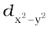 and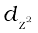 orbitals which point towards the axes along the direction of the ligand will experience more repulsion and will be raised in energy; and the dxy, dyz and dxz orbitals which are directed between the axes will be lowered in energy relative to the average energy in the spherical crystal field. Thus, the degeneracy of the d orbitals has been removed due to ligand electron-metal electron repulsions in the octahedral complex to yield three orbitals of lower energy, t2g set and two orbitals of higher energy, eg set. This splitting of the degenerate levels due to the presence of ligands in a definite geometry is termed as crystal field splitting and the energy separation is denoted by ∆o (the subscript o is for octahedral) (Fig.9.8). Thus, the energy of the two eg orbitals will increase by (3/5) ∆o and that of the three t2g will decrease by (2/5)∆o.
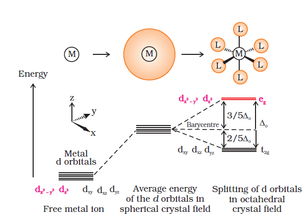
Fig.9.8: d orbital splitting in an octahedral crystal field
The crystal field splitting, ∆o, depends upon the field produced by the ligand and charge on the metal ion. Some ligands are able to produce strong fields in which case, the splitting will be large whereas others produce weak fields and consequently result in small splitting of d orbitals. In general, ligands can be arranged in a series in the order of increasing field strength as given below:
I– < Br– < SCN– < Cl– < S2– < F– < OH– < C2O42– < H2O < NCS–
< edta4– < NH3 < en < CN– < CO
Such a series is termed as spectrochemical series. It is an experimentally determined series based on the absorption of light by complexes with different ligands. Let us assign electrons in the d orbitals of metal ion in octahedral coordination entities. Obviously, the single d electron occupies one of the lower energy t2g orbitals. In d2 and d3 coordination entities, the d electrons occupy the t2g orbitals singly in accordance with the Hund’s rule. For d4 ions, two possible patterns of electron distribution arise: (i) the fourth electron could either enter the t2g level and pair with an existing electron, or (ii) it could avoid paying the price of the pairing energy by occupying the eg level. Which of these possibilities occurs, depends on the relative magnitude of the crystal field splitting, ∆o and the pairing energy, P (P represents the energy required for electron pairing in a single orbital). The two options are:
(i) If ∆o < P, the fourth electron enters one of the eg orbitals giving the configuration 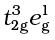. Ligands for which ∆o < P are known as weak field ligands and form high spin complexes.
(ii) If ∆o > P, it becomes more energetically favourable for the fourth electron to occupy a t2g orbital with configuration t2g4eg0. Ligands which produce this effect are known as strong field ligands and form low spin complexes.
Calculations show that d4 to d7 coordination entities are more stable for strong field as compared to weak field cases.
(b) Crystal field splitting in tetrahedral coordination entities
In tetrahedral coordination entity formation, the d orbital splitting (Fig. 9.9) is inverted and is smaller as compared to the octahedral field splitting. For the same metal, the same ligands and metal-ligand distances, it can be shown that ∆t = (4/9) ∆0. Consequently, the orbital splitting energies are not sufficiently large for forcing pairing and, therefore, low spin configurations are rarely observed.
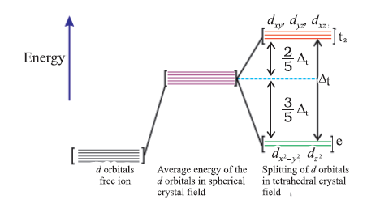
Fig.9.9: d orbital splitting in a tetrahedral crystal field.
9.5.5 Colour in Coordination Compounds
In the previous Unit, we learnt that one of the most distinctive properties of transition metal complexes is their wide range of colours. This means that some of the visible spectrum is being removed from white light as it passes through the sample, so the light that emerges is no longer white. The colour of the complex is complementary to that which is absorbed. The complementary colour is the colour generated from the wavelength left over; if green light is absorbed by the complex, it appears red. Table 9.3 gives the relationship of the different wavelength absorbed and the colour observed.
Table 9.3: Relationship between the Wavelength of Light absorbed and the Colour observed in some Coordination Entities
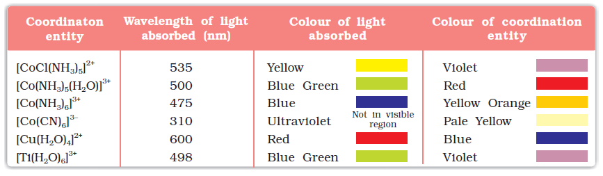
The colour in the coordination compounds can be readily explained in terms of the crystal field theory. Consider, for example, the complex [Ti(H2O)6]3+, which is violet in colour. This is an octahedral complex where the single electron (Ti3+ is a 3d1 system) in the metal d orbital is in the t2g level in the ground state of the complex. The next higher state available for the electron is the empty eg level. If light corresponding to the energy of blue-green region is absorbed by the complex, it would excite the electron from t2g level to the eg level (t2g1eg0 → t2g0eg1). Consequently, the complex appears violet in colour (Fig. 9.10). The crystal field theory attributes the colour of the coordination compounds to d-d transition of the electron.
It is important to note that in the absence of ligand, crystal field splitting does not occur and hence the substance is colourless. For example, removal of water from [Ti(H2O)6]Cl3 on heating renders it colourless. Similarly, anhydrous CuSO4 is white, but CuSO4.5H2O is blue in colour. The influence of the ligand on the colour of a complex may be illustrated by considering the [Ni(H2O)6]2+ complex, which forms when nickel(II) chloride is dissolved in water. If the didentate ligand, ethane-1,2-diamine(en) is progressively added in the molar ratios en:Ni, 1:1, 2:1, 3:1, the following series of reactions and their associated colour changes occur:
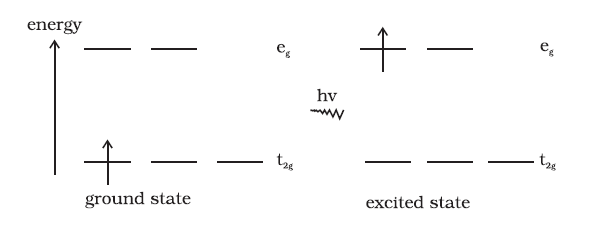
Fig.9.10: Transition of an electron in [Ti(H2O)6]3+
[Ni(H2O)6]2+ (aq) + en (aq) = [Ni(H2O)4(en)]2+(aq) + 2H2O
green pale blue
[Ni(H2O)4 (en)]2+(aq) + en (aq) = [Ni(H2O)2(en)2]2+(aq) + 2H2O
blue/purple
[Ni(H2O)2(en)2]2+(aq) + en (aq) = [Ni(en)3]2+(aq) + 2H2O
violet
This sequence is shown in Fig. 9.11.
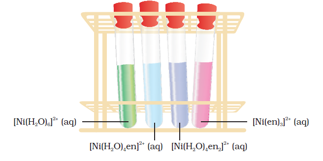
Fig.9.11 Aqueous solutions of complexes of nickel(II) with an increasing number of ethane-1, 2-diamine ligands
Colour of Some Gem Stones
The colours produced by electronic transitions within the d orbitals of a transition metal ion occur frequently in everyday life. Ruby [Fig.9.12(a)] is aluminium oxide (AL2O3) containing about 0.5-1% Cr3+ ions (d3), which are randomly distributed in positions normally occupied by Al3+. We may view these chromium(III) species as octahedral chromium(III) complexes incorporated into the alumina lattice; d–d transitions at these centres give rise to the colour.
In emerald [Fig.9.12(b)], Cr3+ ions occupy octahedral sites in the mineral beryl (Be3AL2Si6O18). The absorption bands seen in the ruby shift to longer wavelength, namely yellow-red and blue, causing emerald to transmit light in the green region.
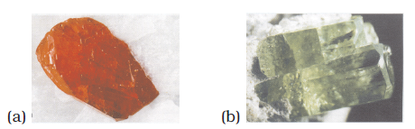
Fig.9.12: (a) Ruby: this gemstone was found in marble from Mogok, Myanmar; (b) Emerald: this gemstone was found in Muzo, Columbia.
9.5.6 Limitations of Crystal Field Theory
The crystal field model is successful in explaining the formation, structures, colour and magnetic properties of coordination compounds to a large extent. However, from the assumptions that the ligands are point charges, it follows that anionic ligands should exert the greatest splitting effect. The anionic ligands actually are found at the low end of the spectrochemical series. Further, it does not take into account the covalent character of bonding between the ligand and the central atom. These are some of the weaknesses of CFT, which are explained by ligand field theory (LFT) and molecular orbital theory which are beyond the scope of the present study.
Intext Questions
9.5 Explain on the basis of valence bond theory that [Ni(CN)4]2– ion with square planar structure is diamagnetic and the [NiCL4]2– ion with tetrahedral geometry is paramagnetic.
9.6 [NiCL4]2– is paramagnetic while [Ni(CO)4] is diamagnetic though both are tetrahedral. Why?
9.7 [Fe(H2O)6]3+ is strongly paramagnetic whereas [Fe(CN)6]3– is weakly paramagnetic. Explain.
9.8 Explain [Co(NH3)6]3+ is an inner orbital complex whereas [Ni(NH3)6]2+ is an outer orbital complex.
9.9 Predict the number of unpaired electrons in the square planar [Pt(CN)4]2– ion.
9.10 The hexaquo manganese(II) ion contains five unpaired electrons, while the hexacyanoion contains only one unpaired electron. Explain using Crystal
Field Theory.
9.6 Bonding in Metal Carbonyls
The homoleptic carbonyls (compounds containing carbonyl ligands only) are formed by most of the transition metals. These carbonyls have simple, well defined structures. Tetracarbonylnickel(0) is tetrahedral, pentacarbonyliron(0) is trigonalbipyramidal while hexacarbonyl chromium(0) is octahedral.
Decacarbonyldimanganese(0) is made up of two square pyramidal Mn(CO)5 units joined by a Mn – Mn bond. Octacarbonyldicobalt(0) has a Co – Co bond bridged by two CO groups (Fig.9.13).
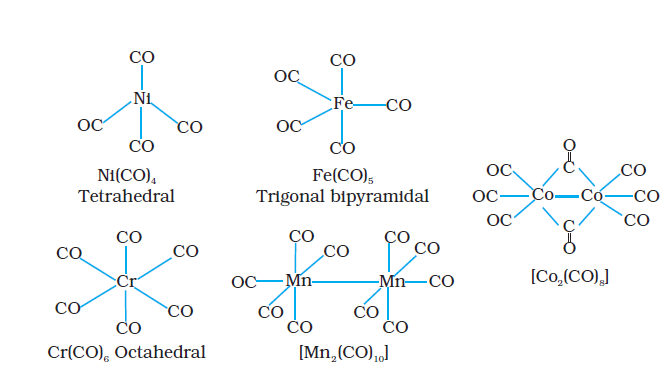
Fig. 9.13 Structures of some representative homoleptic metal carbonyls.
The metal-carbon bond in metal carbonyls possess both σ and π character. The M–C σ bond is formed by the donation of lone pair of electrons on the carbonyl carbon into a vacant orbital of the metal. The M–C π bond is formed by the donation of a pair of electrons from a filled d orbital of metal into the vacant antibonding π* orbital of carbon monoxide. The metal to ligand bonding creates a synergic effect which strengthens the bond between CO and the metal (Fig.9.14).
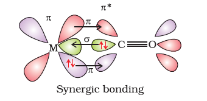
Fig. 9.14: Example of synergic bonding interactions in a carbonyl complex.
9.7 Stability of Coordination Compounds
The stability of a complex in solution refers to the degree of association between the two species involved in the state of equilibrium. The magnitude of the (stability or formation) equilibrium constant for the association, quantitatively expresses the stability. Thus, if we have a reaction of the type:
M + 4L ML4
then the larger the stability constant, the higher the proportion of ML4 that exists in solution. Free metal ions rarely exist in the solution so that M will usually be surrounded by solvent molecules which will compete with the ligand molecules, L, and be successively replaced by them. For simplicity, we generally ignore these solvent molecules and write four stability constants as follows:
M + L ML K1 = [ML]/[M][L]
ML + L ML2 K2 = [ML2]/[ML][L]
ML2 + L ML3 K3 = [ML3]/[ML2][L]
ML3 + L ML4 K4 = [ML4]/[ML3][L]
where K1, K2, etc., are referred to as stepwise stability constants. Alternatively, we can write the overall stability constant thus:
M + 4L ML4 β4 = [ML4]/[M][L]4
The stepwise and overall stability constant are therefore related as follows:
β4 = K1 × K2 × K3 × K4 or more generally,
βn = K1 × K2 × K3 × K4 ....... Kn
If we take as an example, the steps involved in the formation of the cuprammonium ion, we have the following:
Cu2+ + NH3 Cu(NH3)2+ K1 = [Cu(NH3)2+]/[Cu2+][NH3]
Cu(NH3)2+ + NH3 Cu(NH3)22+ K2 = [Cu(NH3)22+]/[ Cu(NH3)2+][NH3] etc.
where K1, K2 are the stepwise stability constants and overall stability constant.
Also β4 = [Cu(NH3)42+]/[Cu2+][NH3)4
The addition of the four amine groups to copper shows a pattern found for most formation constants, in that the successive stability constants decrease. In this case, the four constants are:
logK1 = 4.0, logK2 = 3.2, logK3 = 2.7, logK4 = 2.0 or log β4 = 11.9
The instability constant or the dissociation constant of coordination compounds is defined as the reciprocal of the formation constant.
Intext Question
9.11 Calculate the overall complex dissociation equilibrium constant for the Cu(NH3)4 2+ ion, given that b4 for this complex is 2.1 × 1013.
9.8 Importance and Applications of Coordination Compounds
The coordination compounds are of great importance. These compounds are widely present in the mineral, plant and animal worlds and are known to play many important functions in the area of analytical chemistry, metallurgy, biological systems, industry and medicine. These are described below:
• Coordination compounds find use in many qualitative and quantitative chemical analysis. The familiar colour reactions given by metal ions with a number of ligands (especially chelating ligands), as a result of formation of coordination entities, form the basis for their detection and estimation by classical and instrumental methods of analysis. Examples of such reagents include EDTA, DMG (dimethylglyoxime), α –nitroso–β–naphthol, cupron, etc.
• Hardness of water is estimated by simple titration with Na2EDTA. The Ca2+ and Mg2+ ions form stable complexes with EDTA. The selective estimation of these ions can be done due to difference in the stability constants of calcium and magnesium complexes.
• Some important extraction processes of metals, like those of silver and gold, make use of complex formation. Gold, for example, combines with cyanide in the presence of oxygen and water to form the coordination entity [Au(CN)2]– in aqueous solution. Gold can be separated in metallic form from this solution by the addition of zinc (Unit 6).
• Similarly, purification of metals can be achieved through formation and subsequent decomposition of their coordination compounds. For example, impure nickel is converted to [Ni(CO)4], which is decomposed to yield pure nickel.
• Coordination compounds are of great importance in biological systems. The pigment responsible for photosynthesis, chlorophyll, is a coordination compound of magnesium. Haemoglobin, the red pigment of blood which acts as oxygen carrier is a coordination compound of iron. Vitamin B12, cyanocobalamine, the anti–pernicious anaemia factor, is a coordination compound of cobalt. Among the other compounds of biological importance with coordinated metal ions are the enzymes like, carboxypeptidase A and carbonic anhydrase (catalysts of biological systems).
• Coordination compounds are used as catalysts for many industrial processes. Examples include rhodium complex, [(Ph3P)3RhCl], a Wilkinson catalyst, is used for the hydrogenation of alkenes.
• Articles can be electroplated with silver and gold much more smoothly and evenly from solutions of the complexes, [Ag(CN)2]– and [Au(CN)2]– than from a solution of simple metal ions.
• In black and white photography, the developed film is fixed by washing with hypo solution which dissolves the undecomposed AgBr to form a complex ion, [Ag(S2O3)2]3–.
• There is growing interest in the use of chelate therapy in medicinal chemistry. An example is the treatment of problems caused by the presence of metals in toxic proportions in plant/animal systems. Thus, excess of copper and iron are removed by the chelating ligands D–penicillamine and desferrioxime B via the formation of coordination compounds. EDTA is used in the treatment of lead poisoning. Some coordination compounds of platinum effectively inhibit the growth of tumours. Examples are: cis–platin and related compounds.
Summary
The chemistry of coordination compounds is an important and challenging area of modern inorganic chemistry. During the last fifty years, advances in this area, have provided development of new concepts and models of bonding and molecular structure, novel breakthroughs in chemical industry and vital insights into the functioning of critical components of biological systems.
The first systematic attempt at explaining the formation, reactions, structure and bonding of a coordination compound was made by A. Werner. His theory postulated the use of two types of linkages (primary and secondary) by a metal atom/ion in a coordination compound. In the modern language of chemistry these linkages are recognised as the ionisable (ionic) and non-ionisable (covalent) bonds, respectively. Using the property of isomerism, Werner predicted the geometrical shapes of a large number of coordination entities.
The Valence Bond Theory (VBT) explains with reasonable success, the formation, magnetic behaviour and geometrical shapes of coordination compounds. It, however, fails to provide a quantitative interpretation of magnetic behaviour and has nothing to say about the optical properties of these compounds.
The Crystal Field Theory (CFT) to coordination compounds is based on the effect of different crystal fields (provided by the ligands taken as point charges), on the degeneracy of d orbital energies of the central metal atom/ion. The splitting of the d orbitals provides different electronic arrangements in strong and weak crystal fields. The treatment provides for quantitative estimations of orbital separation energies, magnetic moments and spectral and stability parameters. However, the assumption that ligands consititute point charges creates many theoretical difficulties.
The metal–carbon bond in metal carbonyls possesses both s and p character. The ligand to metal is s bond and metal to ligand is p bond. This unique synergic
bonding provides stability to metal carbonyls.
The stability of coordination compounds is measured in terms of stepwise stability (or formation) constant (K) or overall stability constant (b). The stabilisation of coordination compound due to chelation is called the chelate effect. The stability of coordination compounds is related to Gibbs energy, enthalpy and entropy terms.
Coordination compounds are of great importance. These compounds provide critical insights into the functioning and structures of vital components of biological systems. Coordination compounds also find extensive applications in metallurgical processes, analytical and medicinal chemistry.
Exercises
9.1 Explain the bonding in coordination compounds in terms of Werner's postulates.
9.2 FeSO4 solution mixed with (NH4)2SO4 solution in 1:1 molar ratio gives the test of Fe2+ ion but CuSO4 solution mixed with aqueous ammonia in 1:4 molar ratio does not give the test of Cu2+ ion. Explain why?
9.3 Explain with two examples each of the following: coordination entity, ligand, coordination number, coordination polyhedron, homoleptic and heteroleptic.
9.4 What is meant by unidentate, didentate and ambidentate ligands? Give two examples for each.
9.5 Specify the oxidation numbers of the metals in the following coordination entities:
(i) [Co(H2O)(CN)(en)2]2+ (iii) [PtCL4]2– (v) [Cr(NH3)3Cl3]
(ii) [CoBr2(en)2]+ (iv) K3[Fe(CN)6]
9.6 Using IUPAC norms write the formulas for the following:
(i) Tetrahydroxozincate(II) (vi) Hexaamminecobalt(III) sulphate
(ii) Potassium tetrachloridopalladate(II) (vii) Potassium tri(oxalato)chromate(III)
(iii) Diamminedichloridoplatinum(II) (viii) Hexaammineplatinum(IV)
(iv) Potassium tetracyanonickelate(II) (ix) Tetrabromidocuprate(II)
(v) Pentaamminenitrito-O-cobalt(III) (x) Pentaamminenitrito-N-cobalt(III)
9.7 Using IUPAC norms write the systematic names of the following:
(i) [Co(NH3)6]Cl3 (iv) [Co(NH3)4Cl(NO2)]Cl (vii) [Ni(NH3)6]Cl2
(ii) [Pt(NH3)2Cl(NH2CH3)]Cl (v) [Mn(H2O)6]2+ (viii) [Co(en)3]3+
(iii) [Ti(H2O)6]3+ (vi) [NiCL4]2– (ix) [Ni(CO)4]
9.8 List various types of isomerism possible for coordination compounds, giving an example of each.
9.9 How many geometrical isomers are possible in the following coordination entities?
(i) [Cr(C2O4)3]3– (ii) [Co(NH3)3Cl3]
9.10 Draw the structures of optical isomers of:
(i) [Cr(C2O4)3]3– (ii) [PtCl2(en)2]2+ (iii) [Cr(NH3)2Cl2(en)]+
9.11 Draw all the isomers (geometrical and optical) of:
(i) [CoCl2(en)2]+ (ii) [Co(NH3)Cl(en)2]2+ (iii) [Co(NH3)2Cl2(en)]+
9.12 Write all the geometrical isomers of [Pt(NH3)(Br)(Cl)(py)] and how many of these will exhibit optical isomers?
9.13 Aqueous copper sulphate solution (blue in colour) gives:
(i) a green precipitate with aqueous potassium fluoride and
(ii) a bright green solution with aqueous potassium chloride. Explain these experimental results.
9.14 What is the coordination entity formed when excess of aqueous KCN is added to an aqueous solution of copper sulphate? Why is it that no precipitate of copper sulphide is obtained when H2S(g) is passed through this solution?
9.15 Discuss the nature of bonding in the following coordination entities on the basis of valence bond theory:
(i) [Fe(CN)6]4– (ii) [FeF6]3– (iii) [Co(C2O4)3]3– (iv) [CoF6]3–
9.16 Draw figure to show the splitting of d orbitals in an octahedral crystal field.
9.17 What is spectrochemical series? Explain the difference between a weak field ligand and a strong field ligand.
9.18 What is crystal field splitting energy? How does the magnitude of Do decide the actual configuration of d orbitals in a coordination entity?
9.19 [Cr(NH3)6]3+ is paramagnetic while [Ni(CN)4]2– is diamagnetic. Explain why?
9.20 A solution of [Ni(H2O)6]2+ is green but a solution of [Ni(CN)4]2– is colourless. Explain
9.21 [Fe(CN)6]4– and [Fe(H2O)6]2+ are of different colours in dilute solutions. Why?
9.22 Discuss the nature of bonding in metal carbonyls.
9.23 Give the oxidation state, d orbital occupation and coordination number of the central metal ion in the following complexes:
(i) K3[Co(C2O4)3] (iii) (NH4)2[CoF4]
(ii) cis-[Cr(en)2Cl2]Cl (iv) [Mn(H2O)6]SO4
9.24 Write down the IUPAC name for each of the following complexes and indicate the oxidation state, electronic configuration and coordination number. Also give stereochemistry and magnetic moment of the complex:
(i) K[Cr(H2O)2(C2O4)2].3H2O (iii) CrCl3(py)3 (v) K4[Mn(CN)6]
(ii) [Co(NH3)5Cl-]Cl2 (iv) Cs[FeCL4]
9.25 What is meant by stability of a coordination compound in solution? State the factors which govern stability of complexes.
9.26 What is meant by the chelate effect? Give an example.
9.27 Discuss briefly giving an example in each case the role of coordination compounds in:
(i) biological systems (iii) analytical chemistry
(ii) medicinal chemistry and (iv) extraction/metallurgy of metals.
9.28 How many ions are produced from the complex Co(NH3)6Cl2 in solution?
(i) 6 (ii) 4 (iii) 3 (iv) 2
9.29 Amongst the following ions which one has the highest magnetic moment value?
(i) [Cr(H2O)6]3+ (ii) [Fe(H2O)6]2+ (iii) [Zn(H2O)6]2+
9.30 The oxidation number of cobalt in K[Co(CO)4] is
(i) +1 (ii) +3 (iii) –1 (iv) –3
9.31 Amongst the following, the most stable complex is
(i) [Fe(H2O)6]3+ (ii) [Fe(NH3)6]3+ (iii) [Fe(C2O4)3]3– (iv) [FeCl6]3–
9.32 What will be the correct order for the wavelengths of absorption in the
visible region for the following:
[Ni(NO2)6]4–, [Ni(NH3)6]2+, [Ni(H2O)6]2+ ?
Answers to Some Intext Questions
9.1 (i) [Co(NH3)4(H2O)2]Cl3 (iv) [Pt(NH3)BrCl(NO2)]–
(ii) K2[Ni(CN)4] (v) [PtCl2(en)2](NO3)2
(iii) [Cr(en)3]Cl3 (vi) Fe4[Fe(CN)6]3
9.2 (i) Hexaamminecobalt(III) chloride
(ii) Pentaamminechloridocobalt(III) chloride
(iii) Potassium hexacyanoferrate(III)
(iv) Potassium trioxalatoferrate(III)
(v) Potassium tetrachloridopalladate(II)
(vi) Diamminechlorido(methanamine)platinum(II) chloride
9.3 (i) Both geometrical (cis-, trans-) and optical isomers for cis can exist.
(ii) Two optical isomers can exist.
(iii) There are 10 possible isomers. (Hint: There are geometrical, ionisation
and linkage isomers possible).
(iv) Geometrical (cis-, trans-) isomers can exist.
9.4 The ionisation isomers dissolve in water to yield different ions and thus
react differently to various reagents:
[Co(NH3)5Br]SO4 + Ba2+ → BaSO4 (s)
[Co(NH3)5SO4]Br + Ba2+ → No reaction
[Co(NH3)5Br]SO4 + Ag+ → No reaction
[Co(NH3)5SO4]Br + Ag+ → AgBr (s)
9.6 In Ni(CO)4, Ni is in zero oxidation state whereas in NiCL4 2–, it is in +2 oxidation state. In the presence of CO ligand, the unpaired d electrons of Ni pair up but Cl– being a weak ligand is unable to pair up the unpaired electrons.
9.7 In presence of CN–, (a strong ligand) the 3d electrons pair up leaving only one unpaired electron. The hybridisation is d2sp3 forming inner orbital complex. In the presence of H2O, (a weak ligand), 3d electrons do not pair up. The hybridisation is sp3d2 forming an outer orbital complex containing five unpaired electrons, it is strongly paramagnetic.
9.8 In the presence of NH3, the 3d electrons pair up leaving two d orbitals empty to be involved in d2sp3 hybridisation forming inner orbital complex in case of [Co(NH3)6]3+. In Ni(NH3)6 2+, Ni is in +2 oxidation state and has d8 configuration, the hybridisation involved is sp3d2 forming outer orbital complex.
9.9 For square planar shape, the hybridisation is dsp2. Hence the unpaired electrons in 5d orbital pair up to make one d orbital empty for dsp2 hybridisation. Thus there is no unpaired electron.
9.11 The overall dissociation constant is the reciprocal of overall stability constant i.e. 1/ ß4 = 4.7 × 10–14